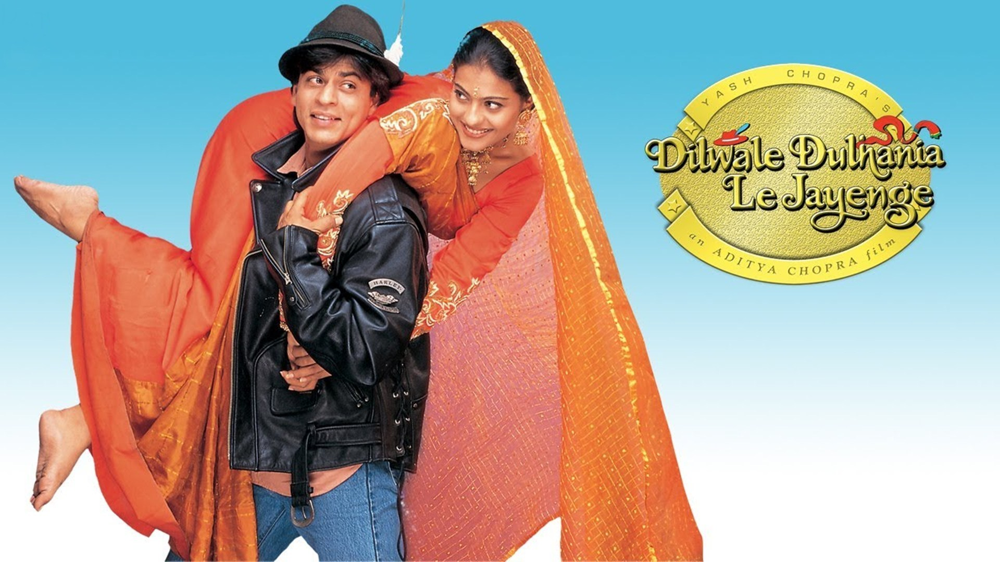
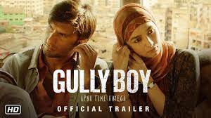
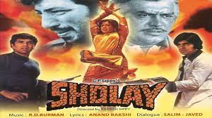

Bollywood, Hindi-language sector of the Indian moviemaking industry that began in Bombay (now Mumbai) in the 1930s and developed into an enormous film empire. Celebrities were often the driving forces of a film, rather than the plotline.
At the turn of the 21st century, the Indian film industry—of which Bollywood remained the largest component—was producing as many as 1,000 feature films annually in all of India’s major languages and in a variety of cities, and international audiences began to develop among South Asians in the United Kingdom and in the United States. Standard features of Bollywood films continued to be formulaic story lines, expertly choreographed fight scenes, spectacular song-and-dance routines, emotion-charged melodrama, and larger-than-life heroes. (Britannica)
Dilwale Dulhania Le Jainge:
Dilwale Dulhania Le Jayenge played in a famous Mumbai theater for 1,200 weeks, or approximately 23 years. That means that more than one generation grew up watching the love story. Called the ultimate Bollywood rom-com, Dilwale Dulhania Le Jayenge is about a young man and woman who meet while inter-railing in Europe. The movie catapulted Shah Rukh Khan to fame.
Jodhaa Akbar:
Jodhaa Akbar is a film considered to be an epic. It presents an epic love story between Akbar, a Mughal emperor, and Jodhaa, a Rajput princess and daughter of Raja Barmal, the King of Amer. The film cuts across different cultures (Hindu and Muslim) and political divides. I can simply say that according to this film, love conquers political enmity.
Gully Boy:
Gully Boy follows a Muslim Indian man named Murad, who lives in a slum of Mumbai. His rough household leads him to focus his emotions into rapping, and eventually he becomes one of the biggest rappers in India. This movie completely shook the Bollywood Industry, along with millions of Indians. While this plot may seem mediocrely mundane, it breaks many unspoken rules of Indian film and culture.
Sholay:
This cult masala western sees escaped convicts Veeru (Dharmendra) and Jai (Bachchan) defend a village terrorised by bandits led by the maniacal Gabbar Singh (Khan). ‘Sholay’ has it all – epic dishum-dishum fight scenes, bromance, humour, memorable songs, plot twists, thrilling dance sequences and sparkling performances. The haunting score and Bollywood’s baddest villain are the icing on a rollicking, all-action cake.